2024.05 – 2025.07
(1년 3개월)
(1년 3개월)
주식회사 언더스타서울 서교점매장 운영 사원
내·외국인 고객 응대와 맞춤 상품 제안, 상품 진열·재고 관리 및 매장 운영을 담당했습니다.
질문과 관찰로 기획·디자인 이면의 의도를 읽어내고,
직관적인 화면 구조와 매끄러운 사용자 흐름을 만듭니다.
 SCAN THE QR CODE
SCAN THE QR CODE
시맨틱 마크업 · 사용자 흐름 연결 · 웹 접근성 준수 · 직관적 UI
HTML5 · CSS3 · SCSS · JavaScript · React · PHP
MySQL · Git · Figma · Vercel · Accessibility
내·외국인 고객 응대와 맞춤 상품 제안, 상품 진열·재고 관리 및 매장 운영을 담당했습니다.
내·외국인 고객 제품 안내와 판매, 상품 진열 및 매장 환경 관리를 담당했습니다.
학교 연계 과학·창의 진로체험 프로그램 운영, 일정 조율, 현장 안전 관리 및 행정 지원을 수행했습니다.
지인들과 소규모 패션 브랜드 론칭을 준비하며 홈페이지 제작을 맡았던 경험이 웹 퍼블리셔를 선택한 계기였습니다. 제품을 소개하는 화면이 단순한 정보 배치를 넘어, 브랜드의 분위기와 정보의 순서, 사용자의 구매 경험을 잇는 가장 중요한 접점임을 배웠습니다.
그 경험 이후 운영자의 기획 의도를 탄탄한 구조로 정리하고, 사용자가 실제 서비스에서 막힘없이 이용할 수 있는 화면으로 구현하는 것을 목표로 삼았습니다. 950시간의 실무 훈련과정에서는 React와 PHP·MySQL 기반 프로젝트를 수행하며 기획, 마크업, 스타일링, 상호작용, 웹 접근성 점검, 배포까지 퍼블리싱의 전체 흐름을 완결성 있게 경험했습니다.
전달된 요청에 머무르지 않고 질문과 관찰을 통해 숨은 요구사항과 기준을 찾아내며, 팀 전체가 명확히 이해할 수 있는 시맨틱 구조로 바꿉니다. 운영자에게는 관리하기 쉽고, 사용자에게는 망설임 없는 경험을 제공하는 웹 퍼블리셔로 성장하고 있습니다.
요청을 구현 가능한 기준으로 바꾸고, 오래 사용할 수 있는 구조로 정리하며, 실제 동작까지 끝까지 확인합니다.
처음 전달받은 요청만으로 답을 정하지 않습니다. 누가 이 화면을 사용하고, 어떤 상황에서 어려움을 느끼며, 운영자는 무엇을 해결하고 싶은지 질문합니다. 매장에서 고객의 시선과 반응을 살피며 말로 표현되지 않은 필요까지 파악했던 경험은 지금도 화면의 기준을 찾는 출발점이 됩니다.
요청의 배경이 보이면 기능의 우선순위와 정보의 순서도 분명해집니다. 그래서 디자인을 그대로 옮기는 데 머무르지 않고, 사용 목적이 자연스럽게 읽히는 구조로 정리한 뒤 구현을 시작합니다.
좋은 화면은 특정 해상도에서만 완성되는 결과물이 아니라, 내용이 바뀌고 기능이 늘어나도 같은 기준으로 확장될 수 있어야 한다고 생각합니다. 반복되는 UI는 역할에 맞게 나누고, 시맨틱 마크업과 일관된 스타일 규칙을 사용해 다음 작업에서도 이해하기 쉬운 구조를 만듭니다.
반응형 레이아웃과 키보드 이동, 포커스 상태, 대체 텍스트 같은 접근성 항목도 마지막 점검이 아니라 설계의 일부로 다룹니다. 작은 기준을 초기에 함께 세우는 것이 수정 비용을 줄이고, 팀이 더 안정적으로 화면을 운영하는 방법이라고 배웠습니다.
구현의 완성은 코드가 작성된 순간이 아니라 사용자가 흐름을 막힘없이 통과했을 때라고 생각합니다. 링크와 버튼의 상태, 입력과 오류 상황, 모바일에서의 터치 영역처럼 실제 이용 과정에서 만나는 장면을 확인하며 화면의 의도와 동작이 어긋나지 않는지 점검합니다.
협업할 때는 결정된 기준과 변경 이유를 공유하고, 서로 다른 요구가 생기면 목적을 중심으로 우선순위를 다시 맞춥니다. 운영자에게는 관리하기 쉬운 화면을, 사용자에게는 이해하기 쉬운 경험을 남기는 것이 제가 만들고 싶은 결과입니다.
프로젝트를 이해할 때는 먼저 의도와 문제를 읽고, 구현할 때는 재사용 가능한 구조를 만들며, 마무리 단계에서는 접근성과 실제 동작을 함께 검증합니다.
브랜드 의도와 사용자 목적 파악
컴포넌트 분리와 확장 가능한 코드
시맨틱 · 키보드 · 자동/수동 검증
React 구조·컴포넌트 설계·반응형·접근성 개선 주도
UI 기획 · 비주얼 방향 · React 예약 상태·컴포넌트 연결
UI 기획 · 정보구조 · 온라인 신청·수정·취소 흐름 · 반응형 구현
UI 기획 · 상품 탐색 · 위시·카트 연결 · 상품 문의·마이페이지 흐름 구현
모바일과 PC 화면이 분리되어 있던 기존 구조를 하나의 React 기반 반응형 구조로 통합하고, 상품 데이터·서비스·Hook·View·UI 역할을 나눠 반복되는 상품 카드를 재사용 가능한 구조로 정리했습니다.
모바일·PC 구조가 분리되고 화면별 상품 UI를 반복 작성해 확장성과 유지보수 비용이 컸습니다.
상품 데이터·서비스·Hook·View·UI 책임을 분리하고 공통 ProductCard와 Variant 규칙을 설계했습니다.
데이터, 조회 로직, 화면 조합, 카드 UI를 역할별 파일로 나누고 하나의 반응형 구조로 연결했습니다.
추천·랭킹·검색에 동일 상품 데이터를 재사용하고 새로운 탐색 화면을 확장할 기준을 확보했습니다.
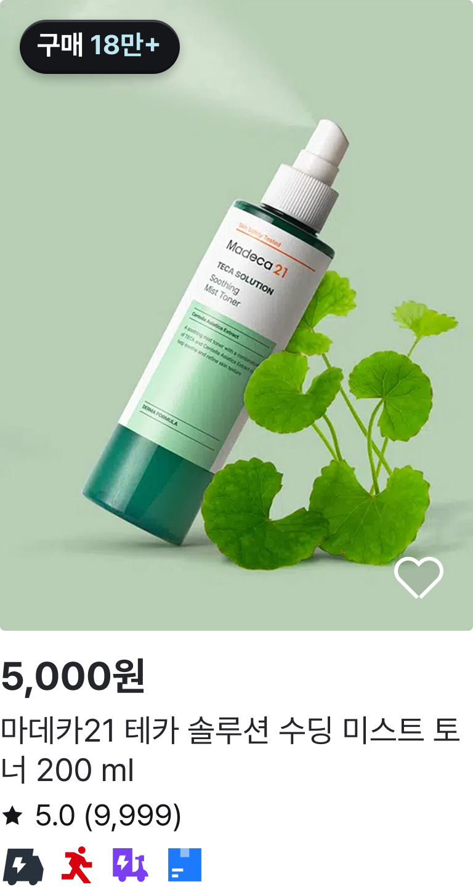
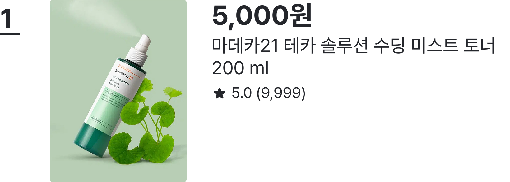
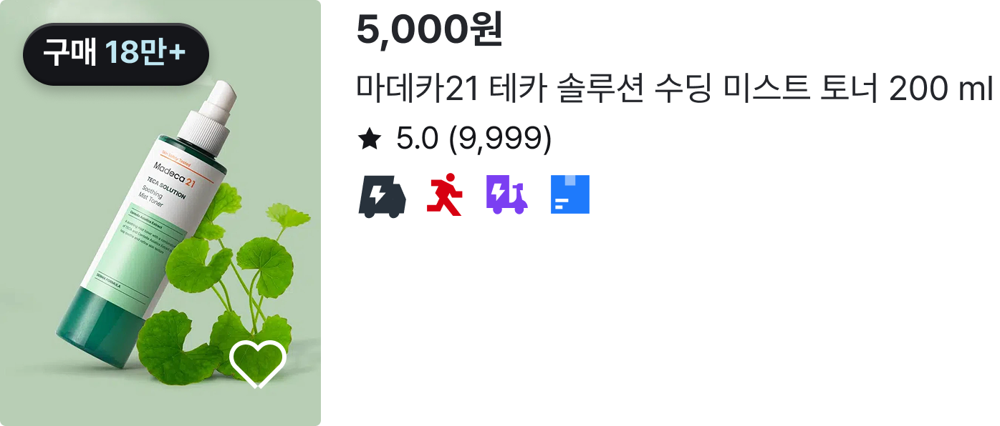
특가 콘텐츠와 실제 예약 조건·선택 과정이 분리되어 있던 흐름을 하나의 여정으로 연결했습니다. 홈 검색 조건을 URL 파라미터로 전달하고, 날짜·항공편·운임 선택 상태와 여정 요약을 함께 동기화해 예약 맥락이 끊기지 않도록 구성했습니다.
특가 콘텐츠를 본 뒤 실제 예약 조건을 선택하는 과정이 끊겨 사용자가 현재 맥락을 잃기 쉬웠습니다.
URL 파라미터와 공통 상태를 통해 특가 발견 → 운임 선택 → 여정 확인 흐름을 하나로 묶었습니다.
DateFareBar와 여정 요약, 항공편 선택 정보를 서로 연결하고 단계별 화면에 맞춰 상태를 갱신했습니다.
특가 발견 → 운임 선택 → 여정 확인을 하나의 예약 흐름으로 연결해 사용자의 선택 맥락을 유지했습니다.
// React State 기반 항공편 선택 및 운임 합계 동기화 const [selectedOutboundFlight, setSelectedOutboundFlight] = useState(null); const [selectedInboundFlight, setSelectedInboundFlight] = useState(null); const handleOutboundDateSelect = (date) => { setSelectedOutboundDate(date); setSelectedOutboundFlight(null); }; const handleInboundDateSelect = (date) => { setSelectedInboundDate(date); setSelectedInboundFlight(null); }; const selectedFares = [selectedOutboundFlight, selectedInboundFlight] .filter(Boolean) .map((selection) => selection.flight?.fares?.[selection.fareKey]) .filter(Boolean); const isSelectionComplete = Boolean(selectedOutboundFlight) && (!isRoundTrip || Boolean(selectedInboundFlight)); const fareTotal = selectedFares.reduce( (total, fare) => total + fare.price, 0, ); // 선택한 운임은 우측 '여정 및 운임' 영역에 즉시 반영 <strong>{isSelectionComplete ? formatKRW(fareTotal) : '-'}</strong>

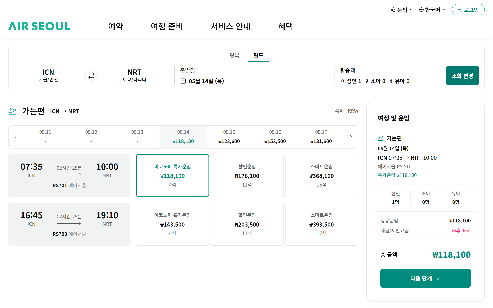
전화·방문에 의존하던 프로그램 신청 과정을 온라인 흐름으로 연결했습니다. 접수 중 프로그램 우선 노출 → 조건별 탐색 → 상세 → 온라인 신청 → 조회·수정·취소까지 홈페이지 안에서 완료 가능한 서비스 흐름을 설계하고, PHP·MySQL·JavaScript·SCSS로 구현했습니다.
전화·방문 중심 신청 방식으로 대기 시간이 길고, 사용자별 기기 환경 차이에 대응하기 어려웠습니다.
접수 중 프로그램 우선 노출, 조건별 탐색, 상세, 온라인 신청, 조회·수정·취소로 이어지는 흐름을 설계했습니다.
PHP·MySQL·JavaScript·
SCSS로 프로그램 데이터와 신청 관리 흐름을 연결하고 반응형 화면을 구성했습니다.
프로그램 탐색부터 신청 관리까지 홈페이지 안에서 완료 가능한 온라인 신청 서비스를 구현했습니다.
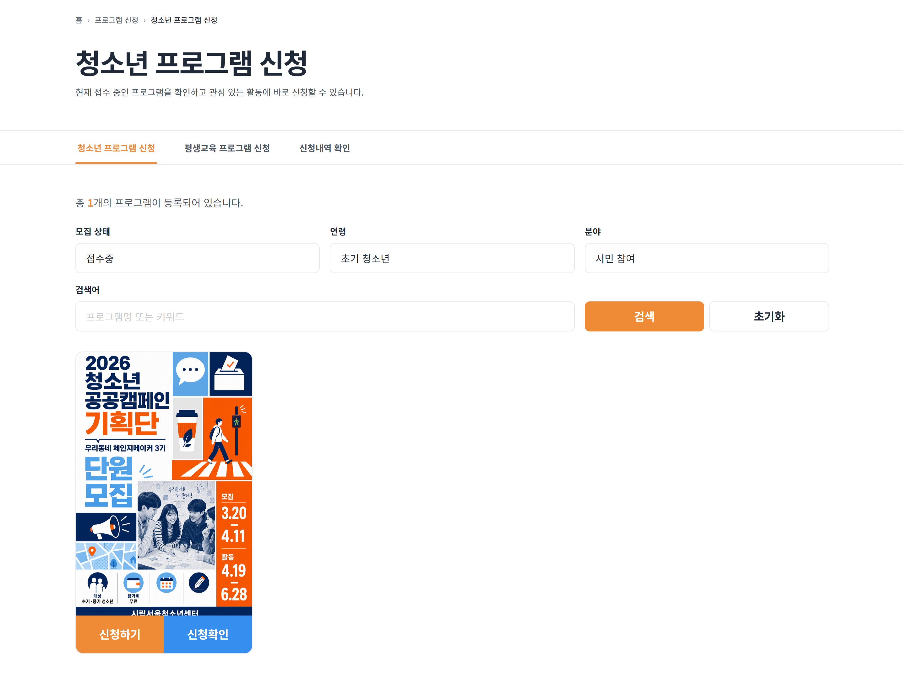

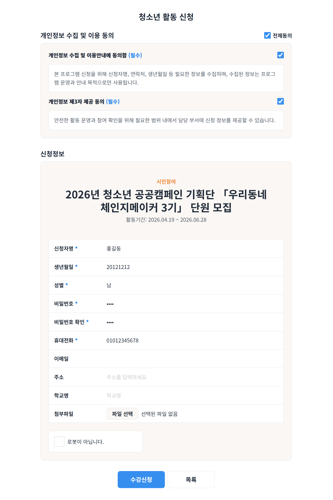
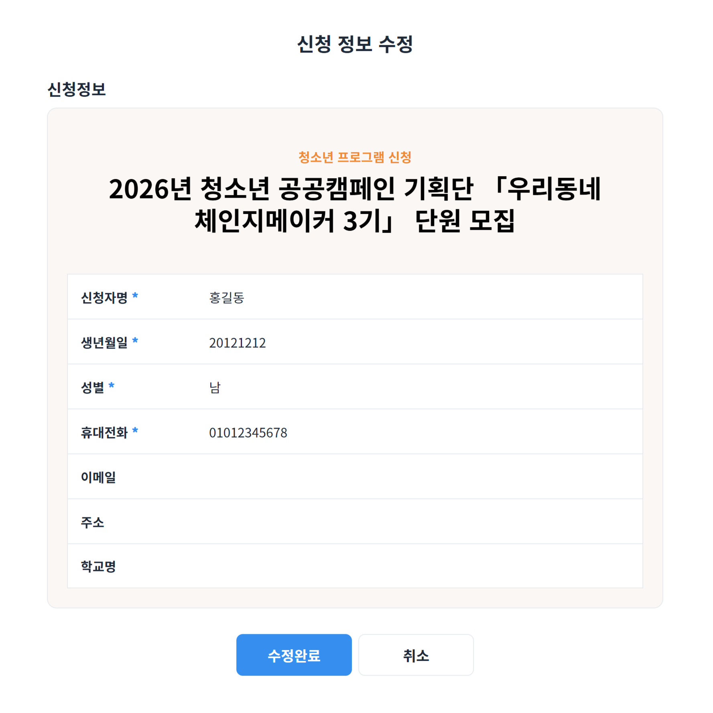
모바일 상품 탐색에서 정보 밀도와 구매·문의 흐름이 분리되지 않도록 URL 규칙, 공통 상품 카드, 위시·장바구니 상태, 상품 문의와 마이페이지 흐름을 함께 정리했습니다. 탐색 방식과 상태가 달라도 사용자가 현재 맥락을 쉽게 파악할 수 있도록 모바일 중심으로 설계했습니다.
모바일 상품 탐색의 정보 밀도와 구매·문의 흐름이 분리되어 사용자가 이동 맥락을 잃기 쉬웠습니다.
카테고리·정렬·보기 방식·페이지 상태를 URL 규칙으로 정리하고 공통 카드와 상태 연결을 재사용했습니다.
1열/2열 목록, 상품 상세, 장바구니, 문의와 마이페이지 흐름을 각각 역할에 맞게 구성했습니다.
탐색 → 구매 → 문의 흐름이 자연스럽게 이어지고, 운영자와 사용자 모두 이해하기 쉬운 구조를 확보했습니다.
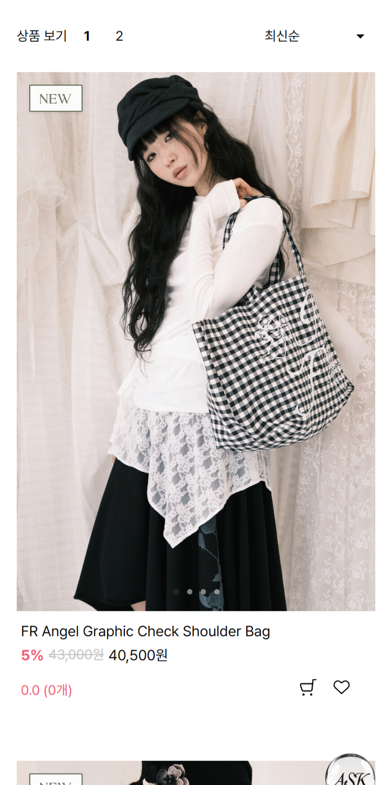
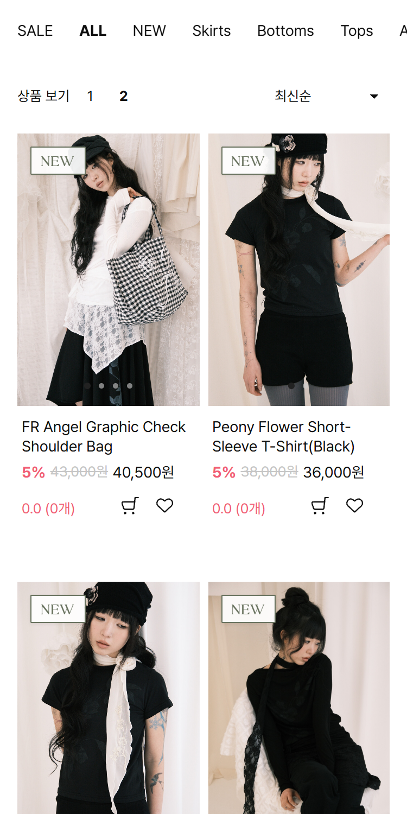
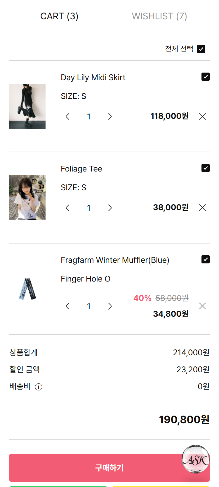
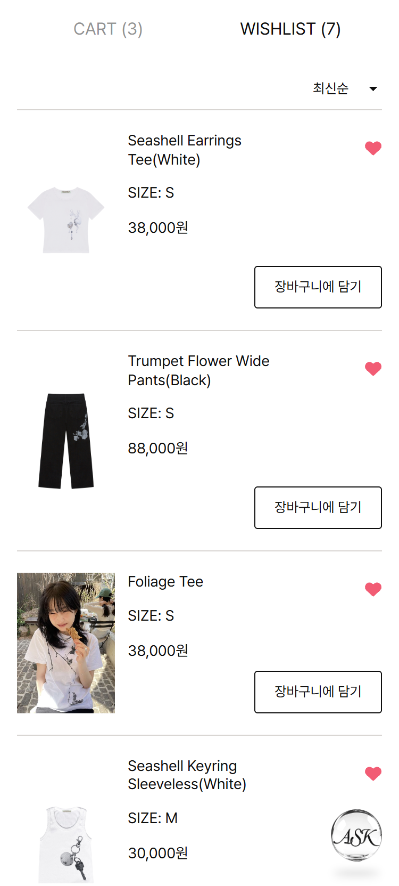
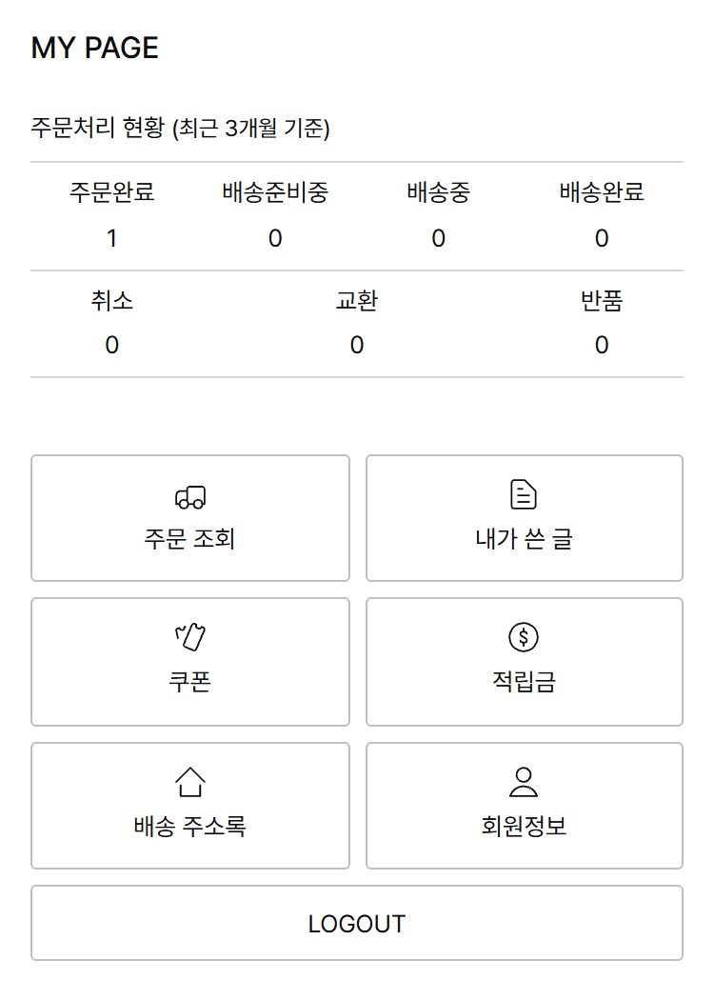
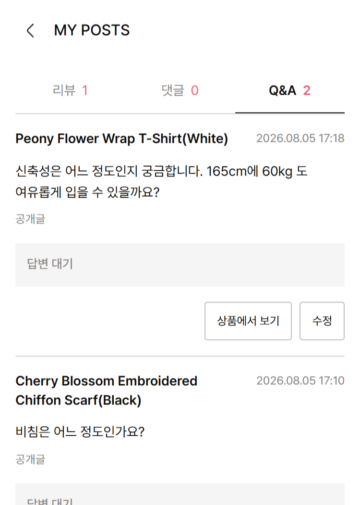
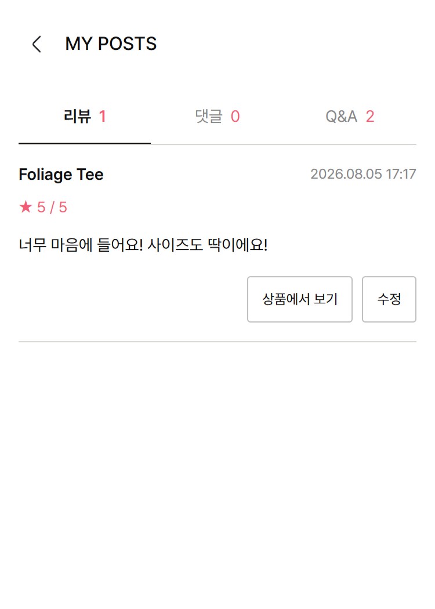
화면 구조와 상호작용에 접근성 기준을 반영하고, 자동 검사와 실제 키보드 사용으로 결과를 확인했습니다.
구조 설계부터 실제 사용 확인까지 같은 기준으로 반복합니다.
3개 프로젝트의 데스크톱·모바일 환경을 총 6회 확인했습니다.
Accessibility 점수와 키보드 주요 흐름을 확인했습니다.
| 프로젝트 | Accessibility | 키보드 |
|---|---|---|
| DAISOMALL | 97 | PASS |
| AIR SEOUL | 97 | PASS |
| 청소년센터 | 93 | PASS |
SCAN THE QR CODEPortfolio · Case study · Accessibility